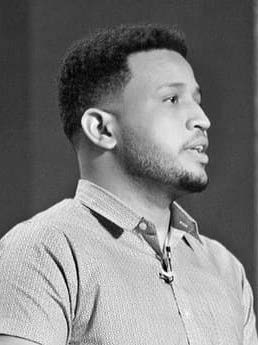

|  |
Curriculum VitaeDaniel Alejandro Soto Arias
Behance Portfolio
Place of birth: Santo Domingo, Dominican Republic
|
I am a graphic, UX/UI, motion designer with over 4 years of experience. I mainly work with brands, visual interfaces for web/apps and advertising campaigns. I can describe myself as a flexible, reliable and creative individual. I am excellent at time management and under pressure work. I am a mature team worker and adaptable to all challenging situations. I can work comfortably in both, as team member and with own initiative.
At Vixicom I worked in the first period as a graphic designer for their different clients that range from the health care and tourism industry, to the cigar industry. In a second period, I also became a motion graphics designer and animator. Some of my responsabilities were:
Adobe Illustrator, Adobe Photoshop, Figma, Adobe XD, Adobe Indesign, Adobe Premiere Pro, Adobe After Effects, Autodesk Maya.
As a freelance graphic designer, I have had the opportunity to work on a wide variety of projects, most of the time working with branding and UX/UI design. I have experience:
Adobe Illustrator, Adobe Photoshop, Figma, Adobe XD, Adobe Indesign, Adobe Premiere Pro, Adobe After Effects, Autodesk Maya.
ITSC, Community College
Superior Technician in Graphic Design
May 2016 - May 2019 Santo Domingo, Dominican Republic
ITLA, Las Americas Institute Of Tecnology
Superior Technician in Multimedia
January 2019 - August 2021 Santo Domingo, Dominican Republic
Metropolitan International University MIU
Bachelor of Science Administration Specialization in Marketing
September 2019 - April 2021 Pembroke Pines, Florida, United States
| 1. UX/UI | ⭐⭐⭐⭐⭐ |
| 2. Branding | ⭐⭐⭐⭐⭐ |
| 3. Motion Graphics | ⭐⭐⭐⭐⭐ |
| 4. Web Development | ⭐⭐⭐⭐⭐ |
Dominican Republic National Brand Design Contest
Finalist (2022)
POTW Featured
Featured Project (2021)